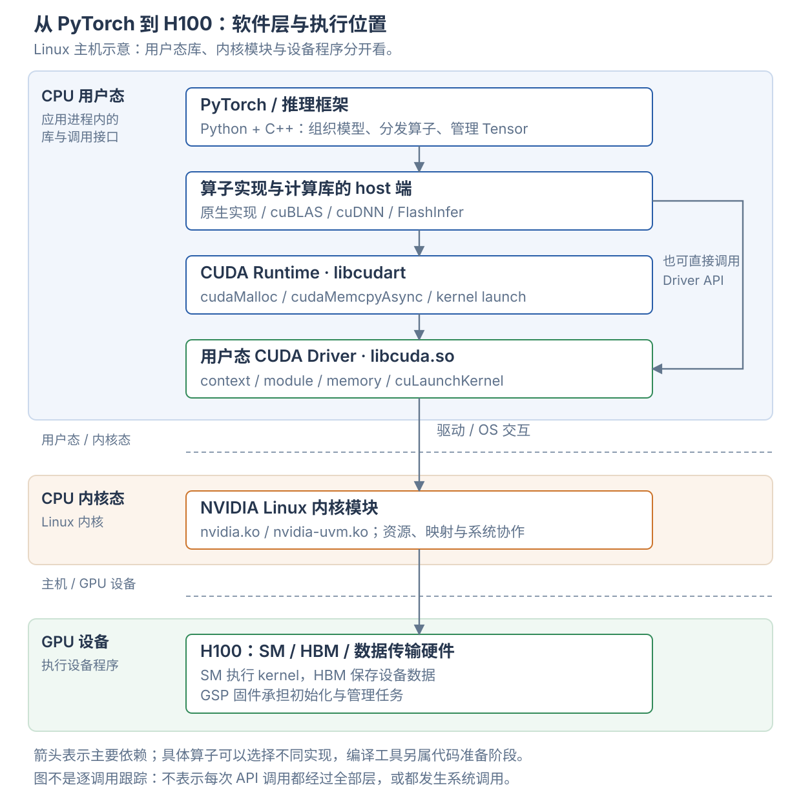

H100 是执行计算的设备。CPU 上的应用、计算库和驱动组织工作，把 GPU 程序和数据交给设备；GPU 再执行指令。CUDA Runtime、用户态 CUDA Driver 和 Linux 内核驱动是三个不同的软件部分。
本页以 Linux / x86 主机使用 H100 为例。Windows、虚拟机直通和 Grace Hopper 的部分边界不同。各计算库的用途见 GPU 软件栈与工具，设备代码怎样生成见 PTX、SASS 与编译流程。
1. 先把执行位置分开
| 位置 | 放着什么 | 执行什么 |
|---|---|---|
| CPU 用户态 | Python 进程、PyTorch 的 C++ 部分、计算库的 host 接口、libcudart、libcuda | 组织模型、选择实现、管理执行对象、提交 GPU 工作 |
| CPU 内核态 | Linux 内核及 NVIDIA 内核模块 | 管理设备与受保护的系统资源，协作维护进程隔离和内存映射 |
| GPU 设备 | H100 的 SM、HBM、复制引擎和管理处理器 | 执行 GPU kernel、访问显存、传输数据和管理设备 |
用户态与内核态是 CPU 侧的权限边界。host 与 device 是主机与 GPU 的执行位置边界。不能因为一个库叫 Driver，就认定它在 Linux 内核中运行。

图表示主要依赖关系。框架按算子选择实现，也可以直接调用 Driver API。箭头不代表每次 API 调用都经过所有矩形，更不代表每次提交都发生一次系统调用。图中计算库矩形表示 CPU 调用侧，库还可以携带供 GPU 执行的代码。
NVIDIA 将 CUDA 环境区分为用户态 Toolkit、用户态 CUDA Driver，以及内核态设备驱动。官方软件部署说明
2. 硬件与固件：GPU 接收什么工作
CPU 执行应用的控制逻辑；H100 执行 GPU 程序。GPU kernel 的机器码描述线程做什么，启动参数描述 grid/block 和函数参数。复制工作则让设备移动数据，例如在主机内存与 HBM 之间传输。
HBM 保存权重、激活、KV cache 与 workspace。SM 上的寄存器和 shared memory 用于执行中的线程状态及协作。GPU 还具有地址翻译、调度、同步和数据传输硬件；不能把所有工作都理解为 CUDA Core 的算术。
固件是驱动与硬件之间的另一类软件。 例如 GPU System Processor（GSP）运行配套固件，承担 GPU 初始化与管理任务。固件随驱动发布，并不等于开发者编写的 attention 或 GEMM kernel。NVIDIA GSP 固件说明
3. Linux 内核态驱动：让操作系统能管理设备
NVIDIA 驱动安装后，Linux 中可以加载多个内核模块。模块职责不同，计算服务器与图形桌面的配置也可以不同。
| 模块 | 主要职责 |
|---|---|
nvidia.ko |
核心设备驱动，与用户态驱动及固件协作管理 GPU 资源 |
nvidia-uvm.ko |
Unified Virtual Memory 管理及相关内存功能 |
nvidia-modeset.ko |
显示模式管理 |
nvidia-drm.ko |
与 Linux DRM 图形子系统集成 |
nvidia-peermem.ko |
为支持的 RDMA 场景提供 GPU 内存对接 |
GPU 设备、进程资源、权限、内存映射、中断和错误处理，需要驱动与操作系统协作。应用通过用户态库使用这些能力；普通 Python 代码不会直接操作内核内部的设备对象。
Linux 上还常见 /dev/nvidia0、/dev/nvidiactl、/dev/nvidia-uvm 这样的设备节点。设备节点是驱动向用户态暴露接口的入口，不是把 HBM 当作普通文件使用。
Linux kernel module 与 CUDA kernel 是两种东西。 前者运行在 CPU 的操作系统内核中；后者运行在 GPU 上。名称都含 kernel，但它们不是同一种程序。
模块清单见 NVIDIA 驱动安装指南，开放模块的源代码见 open-gpu-kernel-modules。开放内核模块不意味着用户态 CUDA 库和 GPU 固件都采用相同的开源方式。
4. 用户态 CUDA Driver：libcuda.so
libcuda.so.1 是 Linux 上 CUDA 用户态驱动的共享库入口。它加载到 CPU 进程的用户态地址空间，提供 CUDA Driver API，并与驱动的其他部分协作。
常规 Linux 安装中，libcuda 与内核模块随驱动配套发布。libcudart 则属于 CUDA Runtime，可以来自系统 Toolkit 或应用的运行依赖。把这两个库放到同一进程中，不会改变它们各自的职责。驱动与 Toolkit 的分发关系
| Driver API 示例 | 管理的对象或动作 |
|---|---|
cuInit、cuDeviceGet |
初始化 Driver API、获取设备 |
cuCtxCreate、primary context 接口 |
创建或使用 CUDA 执行上下文 |
cuMemAlloc、VMM 接口 |
分配设备内存、管理地址与映射 |
cuModuleLoad、cuModuleGetFunction |
加载设备代码模块、取得 kernel 入口 |
cuLaunchKernel |
提交 kernel 的启动配置和参数 |
| stream / event / graph 接口 | 管理工作顺序、依赖和重复提交 |
例如，应用已经有一份 cubin 和若干 GPU 指针，可以通过 Driver API 加载程序、找到函数，再启动函数。上层框架、JIT 系统或自定义扩展可以直接走这条路径。
libcuda 是 CPU 侧控制库，GPU kernel 才是送往设备执行的程序。前者负责调用与管理，后者负责设备上的计算。
5. CUDA Runtime：libcudart
CUDA Runtime 提供另一套常用接口，动态链接时通常由 libcudart.so 提供，也有静态链接方式。
| Runtime API 示例 | 常见用途 |
|---|---|
cudaSetDevice |
选择当前调用使用的设备 |
cudaMalloc、cudaFree |
设备内存分配与释放 |
cudaMemcpyAsync |
提交异步复制 |
cudaStreamCreate、cudaEventRecord |
创建工作流、记录依赖或完成标记 |
cudaLaunchKernel、CUDA C++ 启动语法 |
启动设备函数 |
cudaGraphLaunch |
提交可执行 CUDA Graph |
Runtime 帮调用者管理上下文与设备模块的常见用法，减少显式管理工作。Driver API 提供对上下文和模块加载的更细控制。两套 API 能协作使用；Runtime 通常使用当前进程在该设备上的 primary context，或使用显式设置的上下文。Driver API 与 Runtime API 的区别
常见关系为：
应用 / 计算库
├── Runtime API：cudaMalloc、cudaMemcpyAsync、cudaLaunchKernel
│ ↓
│ 用户态 Driver
│
└── 直接调用 Driver API：cuMemAlloc、cuModuleLoad、cuLaunchKernel
↓
用户态 Driver
直接调用 Driver API，不需要先绕一遍 Runtime API。 cu 和 cuda 是这里两组 API 的命名线索，但名字以 cu 开头的 cuBLAS、cuDNN 并不因此成为 Driver API。
这里的 runtime 指 CUDA 的执行支持库。它与模型推理 runtime、Docker 的 container runtime 各有含义，不能仅凭 runtime 这个词判断层次。
6. Context、module、stream、event、graph 分别是什么
| 对象 | 表达什么 | 放到一次计算里理解 |
|---|---|---|
| CUDA context | 使用设备资源的执行环境 | 关联设备、地址空间及设备资源状态 |
| module | 加载的设备代码模块 | 包含可供调用的 kernel 入口 |
| kernel / function | GPU 上执行的函数 | 例如一次矩阵计算的设备函数 |
| stream | 有序提交工作的抽象 | 复制、填充、计算可以按依赖顺序进入同一 stream |
| event | 记录进度及建立依赖的对象 | 让另一个 stream 等待某项工作完成 |
| graph / graph executable | 工作及依赖、实例化后的执行对象 | 重复提交已经准备好的工作安排 |
一个进程可以使用多个 GPU，也可以显式管理上下文。Runtime 常见的 primary context 是每进程、每设备的资源，不要把“一个进程只有一个 CUDA context”当作通用规则。
stream 不是 CPU 线程，也不是为某个 SM 永久分配的通道。不同 streams 的工作是否重叠，取决于依赖、资源和硬件支持。进入同一 stream 的工作按其顺序语义执行，不要求 CPU 在提交每一步后等待。CUDA 异步执行
7. 计算库：CPU 接口与 GPU 实现一起工作
调用 cublasGemmEx 时，CPU 执行库的 host 端代码。库检查参数、选择算法并提交工作；设备 kernel 在 GPU 上做矩阵计算。一个算子调用可以产生多个 kernel，也可以使用已有的 workspace。
| 组件 | Linux 动态构建中的常见库名 | 提供的能力 |
|---|---|---|
| cuBLAS / cuBLASLt | libcublas.so / libcublasLt.so |
线性代数与矩阵乘法 |
| cuDNN | libcudnn*.so |
深度学习算子与支持的融合计算 |
| NCCL | libnccl.so |
GPU 间通信，例如 all-reduce |
| FlashInfer | Python 包、扩展及按实现准备的设备代码 | 面向推理的 attention、采样和其他 kernels |
| 框架原生或自定义 kernel | 随框架库或自定义扩展打包 | 库之外需要的计算实现 |
表中库名省略版本后缀。实际库文件的拆分与位置取决于发行包和构建方式。
库的共享对象可以同时包含 CPU 代码与打包的设备代码。不能从 .so 文件名推断所有计算都在 CPU 上完成。使用 Tensor Core 的指令来自所选 kernel；CPU 驱动不会在每个矩阵元素上替 GPU 做乘加。
具体库及 kernel 开发工具的关系见 GPU 软件栈与工具。
8. PyTorch 与上层推理框架
PyTorch 为用户提供 Python Tensor 和模型接口，同时有 C++ 实现与不同设备后端。
| 名称 | 所处位置与职责 |
|---|---|
Python torch / torch.nn |
用户表达 Tensor 计算和模型结构的接口 |
torch._C |
Python 与编译后的 PyTorch 实现之间的绑定入口之一 |
| ATen | PyTorch 的 Tensor 与算子实现层，具有 CPU/CUDA 后端 |
| dispatcher / c10 分发机制 | 根据注册的实现和分发条件选择算子路径 |
| CUDA caching allocator | 复用设备内存块，服务 Tensor 存储分配 |
| cuBLAS / 原生 CUDA 实现 | 执行被选中的具体计算 |
例如，普通 CUDA 矩阵乘法可以经过 ATen 的 CUDA 实现，再调用 cuBLAS 或 cuBLASLt。CUDA 上的加法也可能直接使用框架原生 kernel；并非每个算子都要经过 cuBLAS。
分发机制见 PyTorch dispatcher。可对照 PyTorch v2.9.0 的 CUDA 矩阵算子实现 与 cuBLAS 调用封装；具体路径受版本、输入和配置影响。
torch.compile 位于程序捕获与编译的一侧，可以生成 kernel 或选择已有实现。它不会替代 CUDA Driver。编译结果仍需要加载和提交，才能在 GPU 上执行。详见 计算图、编译与 CUDA Graph。
SGLang、vLLM 位于请求与模型执行的一侧，组织请求、batch、KV cache 和多卡工作。TensorRT、TensorRT-LLM 提供模型推理优化与运行时能力。它们可以选择不同的计算实现，但底层设备访问仍需要驱动支持。
各层接收和解释的对象也不同：
| 层次 | 主要理解的对象 |
|---|---|
| 推理服务框架 | 请求、tokens、batch、KV cache 状态 |
| PyTorch | Tensor、模型、参数与算子 |
| cuBLAS 等计算库 | 矩阵尺寸、布局、类型与数据指针 |
| CUDA 执行接口与驱动 | context、设备代码、地址、启动参数与依赖 |
| GPU 执行硬件 | 机器指令、线程工作与存储访问 |
因此 Driver 不需要理解某个请求的聊天内容，计算库也不负责决定下一轮服务哪个用户。每层把需要的信息转换成下一层能使用的对象。
9. 跟着一次矩阵乘法走完流程
下面是用于解释调用关系的 CUDA 示例，未运行：
import torch x_cpu = torch.ones((4, 4), dtype=torch.float16) x = x_cpu.to("cuda") w = torch.ones((4, 4), device="cuda", dtype=torch.float16) y = x @ w y_cpu = y.cpu() # 数学预期：y_cpu 的每个元素都是 4。
初始化与内存
导入 PyTorch 会加载 Python 包与其编译依赖，但不必立即完成全部 CUDA 初始化。使用 CUDA 功能时，框架按需初始化设备支持。torch.cuda 说明
x_cpu.to("cuda") 需要 GPU 存储和数据复制。PyTorch 分配器可以复用已有显存块；需要新块时才向下层分配器请求。CUDA 与驱动管理设备分配和地址映射，复制工作把输入内容送到设备可访问的目标位置。PyTorch 内存管理
torch.ones(..., device="cuda") 既要取得存储，也要生成指定内容。GPU Tensor 的创建不一定只涉及一次内存分配。
选择实现与提交
x @ w 进入矩阵算子的 CUDA 路径，选择具体实现，并准备输入/输出指针和执行参数。计算库或框架借助 Runtime API 或 Driver API 提交工作。
加载的设备代码包含 kernel 的机器指令。H100 执行这些指令，按程序访问 Tensor 数据。是否采用 Tensor Core，取决于具体实现与计算模式，不能仅凭 Python 中出现 @ 判断。
执行与取回结果
CUDA 提交通常对 CPU 异步，因此得到 Tensor 对象 y，不表示 GPU 已经写完其内容。同一 stream 的顺序语义能连接填充、复制与计算；CPU 不必在每一步之间主动同步。
y.cpu() 要把结果放进 CPU 存储，必须正确等待所需的 GPU 工作与复制完成。这与“CPU 拿到一个 GPU Tensor 的 Python 对象”是不同的动作。异步语义见 PyTorch CUDA semantics。
Python 表达 x @ w
→ PyTorch 分发与 CUDA 实现
→ 计算库或框架 kernel 的 host 端准备
→ CUDA Runtime / Driver API
→ 设备代码与工作提交
→ H100 执行
→ 按需要等待并复制结果
10. 编译工具与运行库分处不同阶段
| 阶段 | 常见组件 | 产生什么或做什么 |
|---|---|---|
| 生成实现 | nvcc、Triton compiler、CuTe DSL 编译管线 | 将 kernel 源程序转换为设备代码 |
| 打包与链接 | 编译、链接及打包工具 | 让应用或库携带设备代码和 host 端接口 |
| 加载 | Runtime / Driver 的模块管理 | 为本次执行准备设备函数 |
| 执行 | stream、graph、设备函数启动接口 | 提交工作并管理依赖 |
编译可以提前完成，也可以在首次使用时完成。已有 cubin 可以加载执行；兼容的 PTX 也可以在运行时针对目标 GPU 编译。编译不是每次算子调用都必经的一次完整流程。详细路径见 PTX、SASS 与编译流程。
不同文件也有不同含义：
| 文件或表示 | 主要含义 |
|---|---|
.so |
Linux 用户态共享库，可携带 host 代码与设备程序 |
.ko |
Linux 内核模块，执行于 CPU 内核态 |
.ptx |
GPU 虚拟指令表示，需要转换为目标机器代码 |
.cubin |
包含 GPU 机器代码的 CUDA 二进制模块 |
| SASS | GPU 原生机器指令的汇编表示，不是 Linux 驱动模块 |
11. 安装、容器与版本号怎样对应
Toolkit、Driver 与应用依赖
CUDA Toolkit 是开发工具包，包含开发库、头文件和编译工具。NVIDIA Driver 安装提供与设备配合的驱动组件。应用运行时需要相应库，但不一定需要系统安装完整 Toolkit。预编译应用可以携带或依赖运行所需的库。
例如，CUDA 版 PyTorch wheel 可以通过配套依赖提供运行库和计算库。它仍需要主机驱动。编译自定义 CUDA C++ 扩展则可能需要 Toolkit 中的 nvcc 和头文件；Triton 与 CuTe DSL 有各自的编译依赖。NVIDIA 部署说明
容器共享主机内核驱动
Linux GPU 容器中的应用通常使用镜像内的框架与 CUDA 运行依赖。NVIDIA Container Toolkit 配合容器引擎暴露所选 GPU 设备及所需驱动库，使应用能够访问主机 GPU。
容器内用户态：Python、PyTorch、libcudart、计算库
↓ 配合暴露的设备与驱动接口
主机 NVIDIA 驱动 / Linux 内核
↓
H100
容器没有为每个镜像启动一份独立的 Linux GPU 内核驱动。具体暴露的库、设备与能力由运行配置决定；兼容包等特殊配置还需要单独核对。Container Toolkit 架构、容器 GPU 能力配置
常见版本号不是同一个对象
nvidia-smi 的字段名会随版本变化。下面同时列出常见旧名称与新版名称。
| 看到的位置 | 主要说明什么 |
|---|---|
nvidia-smi 的 Driver Version / KMD Version |
驱动版本字段；KMD 明确表示内核态驱动版本 |
nvidia-smi 的 CUDA Version / CUDA UMD Version |
CUDA 用户态驱动报告支持的最高 CUDA 版本，不等于已安装的 Toolkit |
nvcc --version |
这个 nvcc 所属编译工具包的版本 |
torch.version.cuda |
该 PyTorch 构建使用的 CUDA 版本信息 |
| cuDNN / NCCL / FlashInfer 版本 | 各自组件的版本 |
多个版本号不同并不自动表示错误。较新驱动通常能够运行使用较早 CUDA 版本构建的应用，但还存在最低驱动、PTX 与特性要求。具体兼容范围应按对应版本矩阵检查。CUDA 兼容性、nvidia-smi 文档
12. 监控工具与调度职责
nvidia-smi 通过 NVIDIA Management Library（NVML）查询设备与进程状态。Linux 上常见的 NVML 库名是 libnvidia-ml.so.1。这是管理和监控接口；libcuda.so.1 提供 CUDA Driver API，libcudart 提供 Runtime API，它们不是同一个库。NVML 文档
nvidia-smi 成功，只能证明相应管理访问能够工作。它不能单独证明某个 Python 环境已经安装 CUDA 版框架，也不能证明某段 kernel 已编译并运行。
“调度”也有不同粒度：
| 调度层次 | 主要决定什么 |
|---|---|
| 推理框架 | 本轮服务哪些请求、组成什么 batch |
| CUDA 提交与依赖 | kernels、复制、通信怎样排序与协作 |
| 驱动与设备执行环境 | 设备资源与上下文的管理、共享及运行支持 |
| GPU block / warp 调度 | 已提交工作怎样驻留并使用执行资源 |
CPU 侧的框架不会为每次标量运算决定使用哪一个 CUDA Core。H100 负责执行提交的设备程序，具体线程组织见 CUDA 执行层级与硬件映射。
本页核对了官方接口文档和所标版本的源码。图示表达职责与边界，未抓取某台 H100 的实际调用跟踪；CUDA 示例未运行。